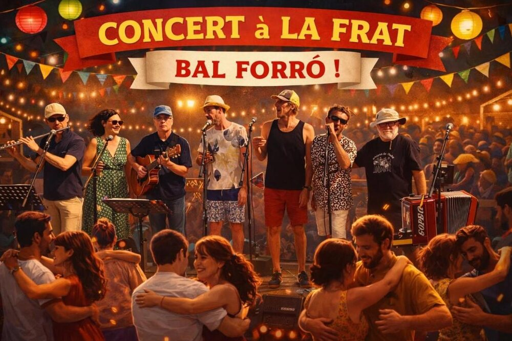

Bal-concert forró avec Gandaia na Ponte à la Fraternité

Lieu : La Fraternité, 1 rue de l'Île de France, Saint-Nazaire
Une soirée chaleureuse et festive pour partager la danse et la musique brésilienne.
19h30 – 20h : mise en jambes en playlist
20h – 20h15 : initiation au forró
20h30 – 22h : concert live
Participation libre au chapeau, au profit de la Frat'. Bar sans alcool sur place.